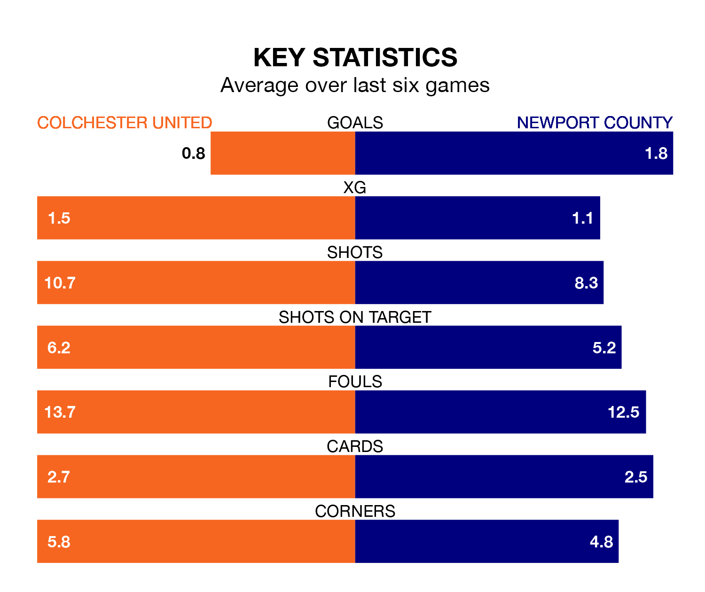

Colchester United face Newport County at the JobServe Community Stadium on Friday looking to secure a first win in nine EFL League Two games.
The U's have lost two and drawn six matches since they last earned three points – against Morecambe on January 27.
They face a Newport side who have won four and lost four over that time.
Colchester are 22nd in the table after 37 games, of which they have won eight and drawn 10, earning 34 points.
Newport are 11 places ahead of United in 11th, with 16 wins and seven draws putting them on 55 points.
In the last 10 years, Colchester and Newport have played each other on 15 occasions. Colchester won five of them, Newport six, and they drew four times.
On average, the U's scored 1.1 goals and the Exiles 1.1 in those matches.
Their last meeting was on October 3, when Newport won 2-1 at home.
In Will Evans, County have one of the league's sharpest shooters so far this season. He has notched 20 goals in 39 appearances, to sit third in the scoring charts.
His goal rate of one every 162 minutes is slightly quicker than that of Joseph Taylor, the U's' top scorer with a goal every 178 minutes, and a total of 11 goals in 25 games.
With 47 goals in 37 games so far this season, the home side are scoring at below the league average rate with 1.3 goals per game. And they are conceding more than average, letting in 66 goals at a rate of 1.8 per game.
The Exiles, meanwhile, are average scorers, with 1.5 goals per game. They have also conceded 1.5 goals per game.
Colchester's last match was on Saturday, a 1-1 draw against Mansfield Town, with Harry Anderson getting the goal for the U's.
Newport lost 1-0 against Barrow last time out, also on Saturday.
Updated: 12:39 (UTC), 26/03/24